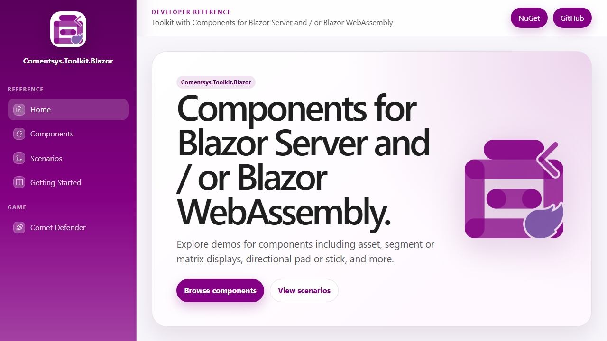
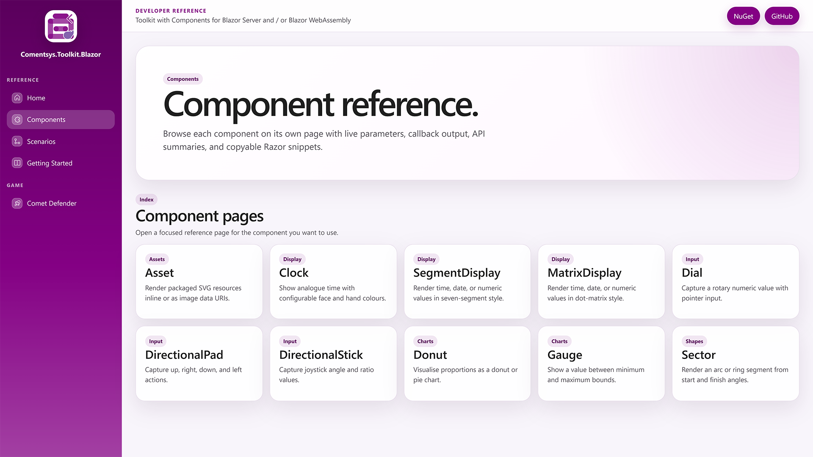
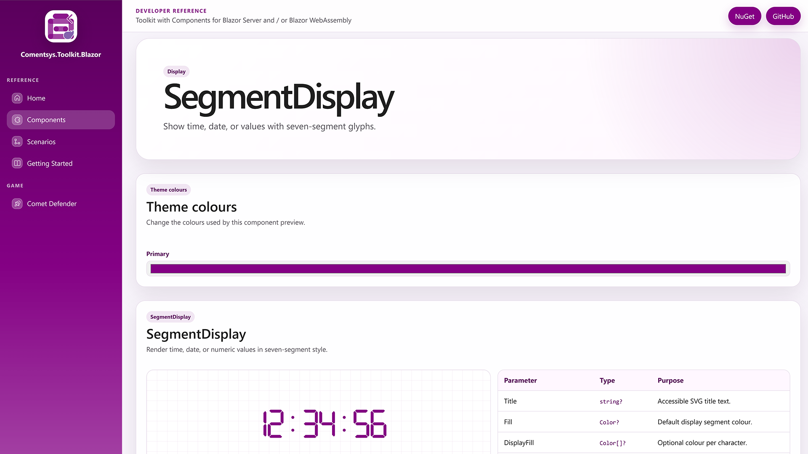
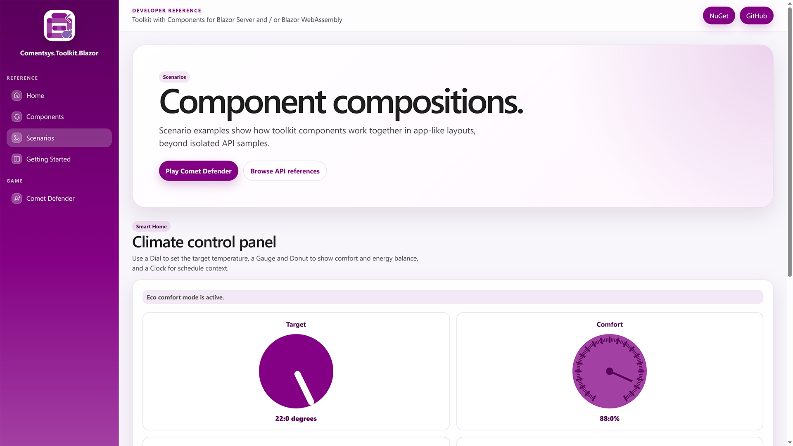
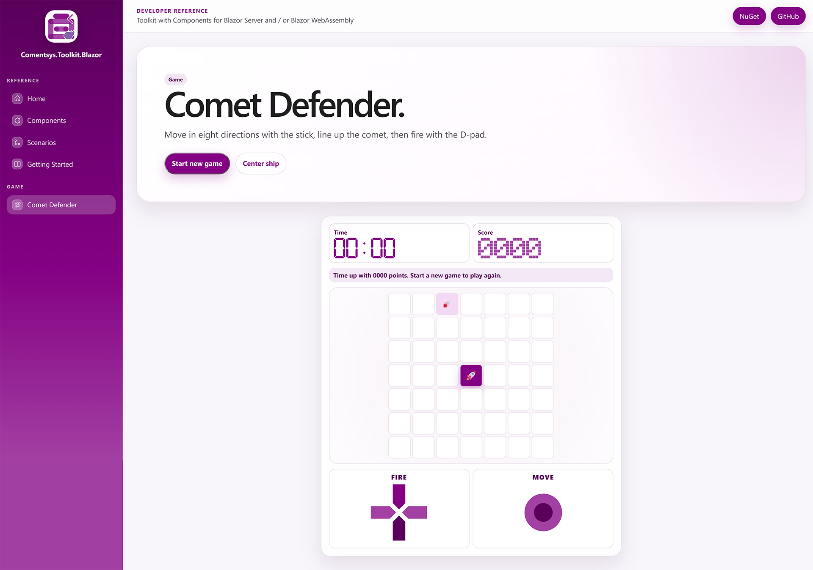

Building Comentsys Blazor Toolkit Demo

Introduction
Comentsys.Toolkit.Blazor launched 2nd September 2025 and offered components that work with Blazor Server and Blazor Web Assembly in .NET including Asset, which takes advantage of my various Asset packages for .NET including Fluent Emoji and Fluent Icons from Microsoft plus others including flags and elements for games. There are also components including Clock, which is an analogue clock, a Dial plus Directional Pad or Directional Stick for games and a Donut chart component. Then there are components for a Gauge, Segment Display which is a seven-segment display and Matrix Display for a five-by-seven dot-matrix which can display supported values along with date and time. Finally, there is Sector which is a component that makes up the Donut component and rounds of the set of ten components.
Comentsys.Toolkit.Blazor was based upon my Comentsys Community Controls for Universal Windows Platform publishedi in 2008 when in late August 2025 as a part of a weekend project decided to prompt GitHub Copilot in Visual Studio to port Controls from this project to Blazor including Clock for analogue clock, Dial for rotational dial, Segment for seven-segment display, Direct for directional pad, Matrix for five-by-seven dot-matrix display, Donut for donut chart and Stick for directional stuck. I wasn't expecting these components to be successfully ported to Blazor from Universal Windows Platform, but it worked and then refined the controls with further prompting I had a brand-new toolkit to be able to be shared for Blazor Server or WebAssembly.

Experience
Comentsys.Toolkit.Blazor by the time I wrote about Building Comentsys Toolkits a couple of weeks after launch September 2025 had gained over 130 downloads but in the next few months by August 2026 it had only reached around double that first month's downloads with 280 downloads. I'd wondered if there was a way to make it more popular and was inspired by a talk at the .NET Meetup in Newcastle upon Tyne from Babatunde Esanju on Building Developer Tools That Last - Payments, Cron, and Open Service where he talked about creating meaningful documentation for developers to think about improving what I had provided to make it easier for developers to use the toolkit in their Blazor applications.
Comentsys.Toolkit.Blazor needed a developer reference so a year after building the original toolkit on 29th August 2026 I launched the GitHub Copilot app and prompted it as follows "Plan a Comentsys.Toolkit.Blazor.Demo Blazor WebAsseembly project for a developer reference website for all components based on WinUI toolkit which shows all components and takes theming from Comentsys website". I'd liked the WinUI tookit which had a great developer showcase so was a good source of inspiration and to make it look the way I wanted it to take theming from the website for all my packages at comentsys.com.

Refinement
Comentsys.Toolkit.Blazor would be best shown off by this developer reference website and even from the first prompt in the GitHub Copilot app it produced great results which I refined including asking it to tweak examples, changes to some of the theming used. I was impressed with the results but realised many of the controls are suitable for a game which are probably rare in Blazor so prompted as follows "Plan a new Section under Navigation called Game for a Game that uses the Directional Pad and Stick to play and uses the Segment Display for a time and the Matrix Display for a Score, create a game that makes use of the d-pad and stick" which became the start of "Comet Defender" which was refined further including to also take advantage of the Asset Component other visual elements of the game plus refinements to the layout of the game.
Comentsys.Toolkit.Blazor itself was improved as some scaling and styling issues was discovered when dynamically changing these values in Comentsys.Toolkit.Blazor.Demo so these were also prompted to be fixed in the GitHub Copilot app plus some issues when using the controls on mobile. I was very happy with the demo website but decided to ask the following "Is there anything else for the website that would improve it for use by developers or for the components?" where some great suggestions were presented including interactive parameters controls, API summary tables and adding scenario examples which eventually resulted in the Climate control panel.

Finalising
Comentsys.Tookit.Blazor was developed using GitHub Copilot so easily but with some coding but developing the developer showcase in GitHub Copilot was all done via prompting where things could be slightly tweaked such as not having the static theme for each component but to allow the colours to be changed which is where some issues with updating the style were discovered and resolved. I also prompted GitHub Copilot "Is there anything else the demo could include?" and it suggested copyable full-page examples which was added to the demo website, plus a few other changes including using Comentsys.Assets.FluentIcons for the navigation bar to help complete the process of finalising the demo website which included request to make certain elements of the website more mobile friendly. Another useful task was the processing of updating the existing documentation with new screenshots but for one I wanted to match the existing time of the analogue Clock so uploaded the original and it matched this for the new theme perfectly, reading analogue clocks was something AI models used to struggle with but now was just another thing that was able to do with minimal effort in GitHub Copilot using GPT 5.5 Medium.
Comentsys.Tookit.Blazor changes were being made so used the GitHub Copilot to update the toolkit itself to fully support .NET 10 along with the already supported .NET 8 and .NET 9. Comentsys.Toolkit.Blazor.Demo would need to be published which can be done with GitHub Pages, so I prompted the GitHub Copilot app with "Plan adding GitHub Pages support needed" which was then refined to produce the necessary workflow using GitHub Actions to publish the demo website using GitHub Actions and then make sure to see that everything was in place so when the website was published it would show up correctly by asking the GitHub Copilot app to ensure that the page was displayed correctly my making any necessary changes or adjustments in GitHub which resulted in the demo website being published successfully which was done one the newly updated package was uploaded to NuGet and the developer reference website was made available at comentsys.github.io/Comentsys.Toolkit.Blazor.
